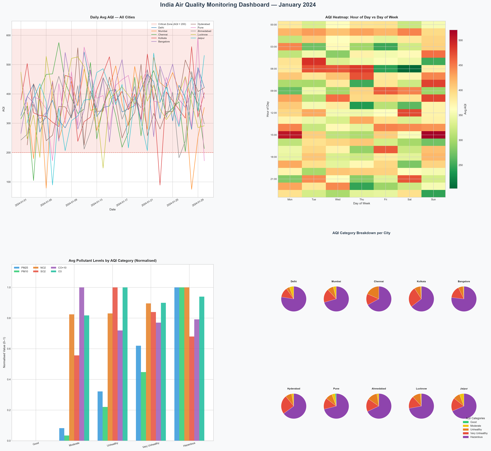

Total Records
715
After cleaning 5 NaT rows
Cities Monitored
10
Major Indian metros
Critical Alerts
627
AQI > 200 hours
Hazardous Hours
501
AQI > 300
Data Period
Jan 2024
Hourly resolution
City-wise AQI Snapshot
Daily Average AQI — All Cities
30-day trend with critical threshold at AQI 200
AQI Category Distribution
Share of hourly readings across all cities
Average Pollutant Levels by Category
Normalised 0–1 across PM2.5, PM10, NO₂, SO₂, CO×10, O₃
Matplotlib Climate Dashboard
Full 4-panel analysis output from Task 3 —
climate_dashboard.png
Place climate_dashboard.png in the same folder as this HTML file.
AQI Risk Map — Indian Metros
Interactive Folium map with heatmap, circle markers, and severity layer controls
aqi_risk_map.html
Top 10 Critical Pollution Alerts
627 total alerts · AQI > 200
| Rank | City | Timestamp | AQI | Severity |
|---|
3-Hour Consecutive Critical Windows
⚠ Cities with 3+ consecutive hours of AQI > 200